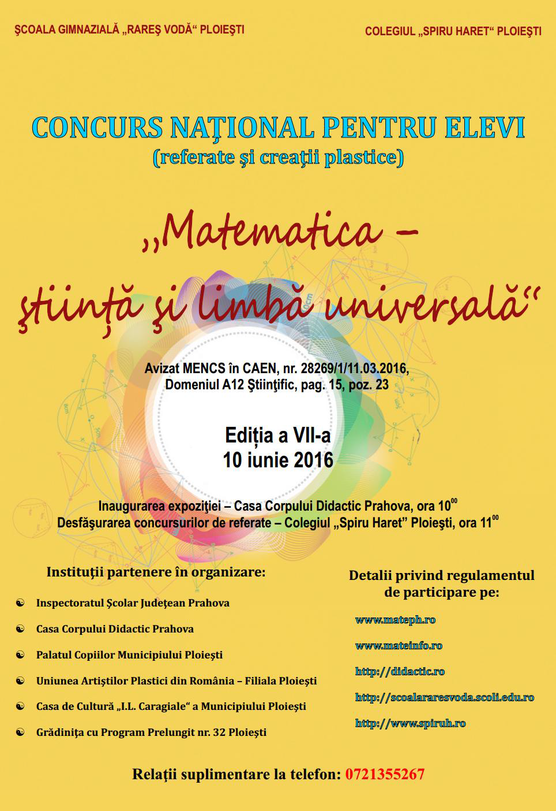
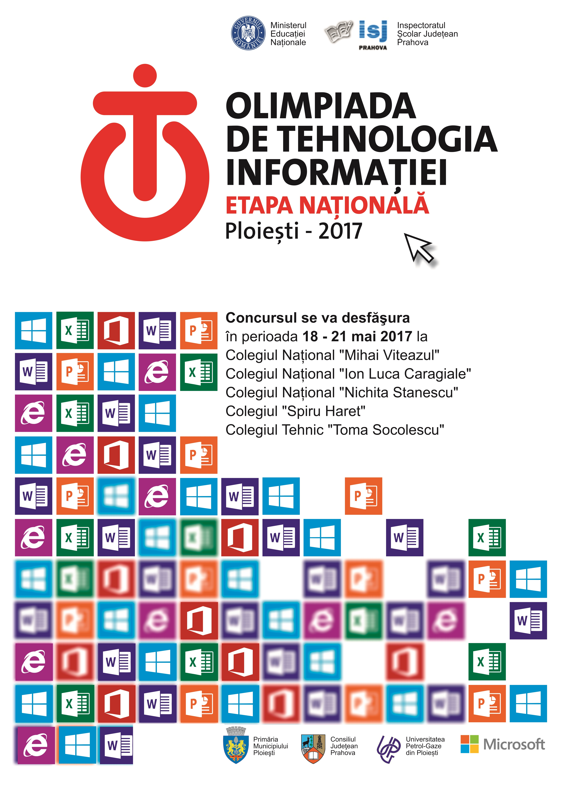
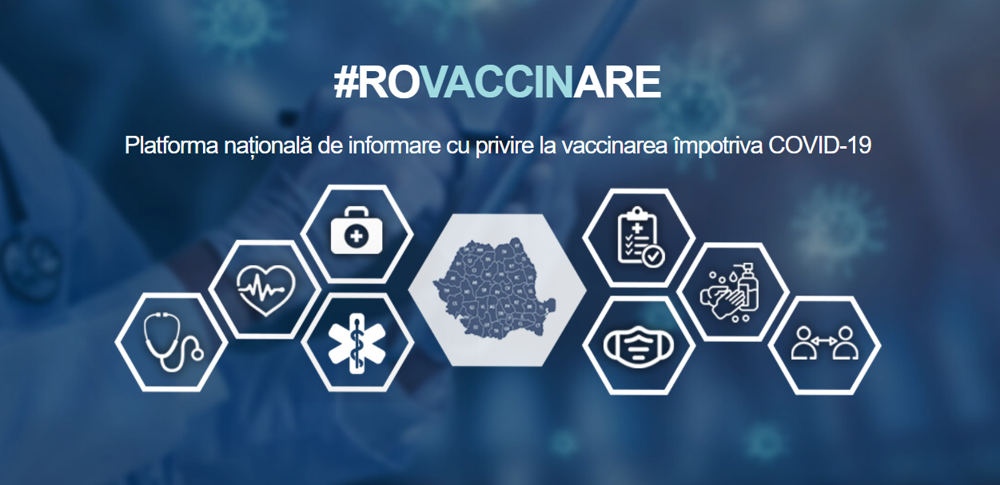
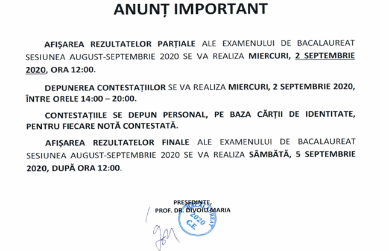
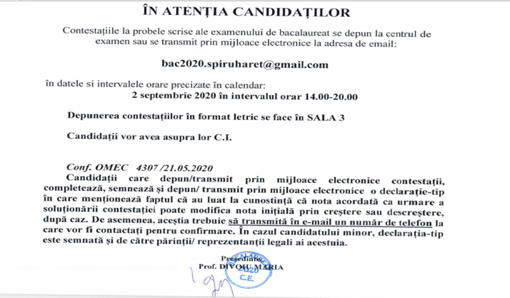
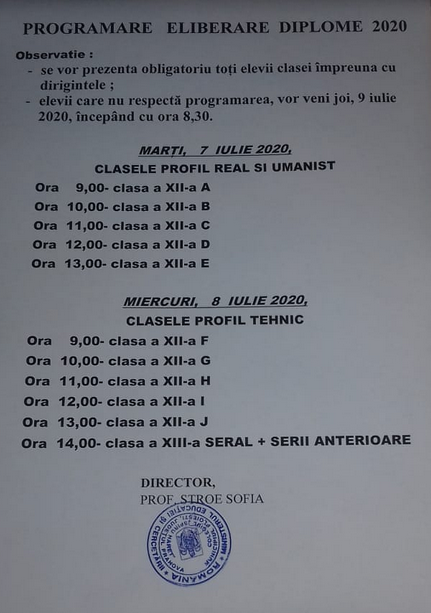
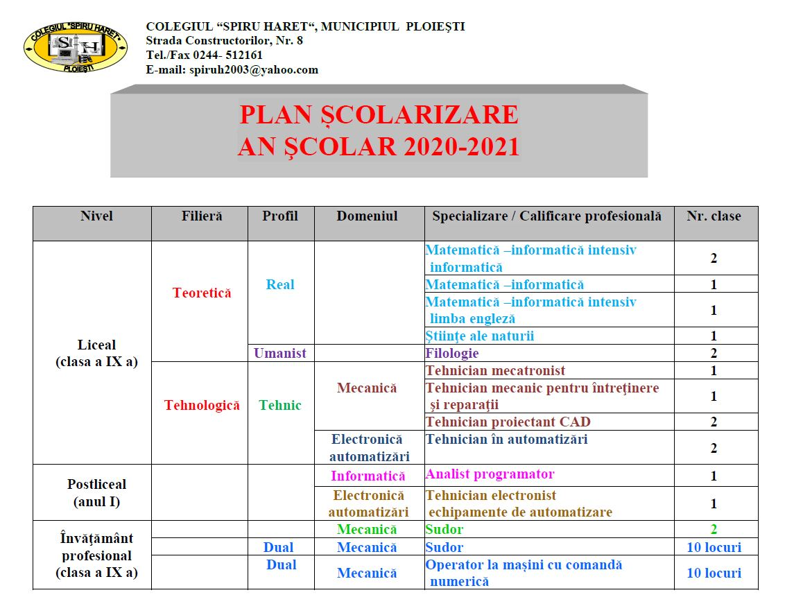

Telefon: 0244-512161 | Email: spiruh2003@yahoo.com; spiruharetpl@gmail.com
Categorie: Omagiu lui Spiru Haret 2008
Categorie: Omagiu lui Spiru Haret 2008
Categorie: Olimpiada nationala de informatica 2008
Categorie: Olimpiada nationala de informatica 2008
Categorie: Olimpiada nationala de informatica 2008
Categorie: Olimpiada nationala de informatica 2008
Categorie: Olimpiada nationala de informatica 2008
Categorie: Olimpiada nationala de informatica 2008
Categorie: Olimpiada nationala de informatica 2008
Categorie: Olimpiada nationala de informatica 2008
Categorie: Omagiu lui Spiru Haret 2013
Spiru Haret,matematician și om politic, s-a născut la 15 februarie 1851. El a fost pedagog, matematician, astronom, om politic și mai ales reformatorul învăță,ântului românesc. În paralel cu activitatea didactică, Spiru Haret s-a implicat și în viața politică, unde, ca membru al PNL, este preocupat de învățământ și educție, domenii în care îndeplinește multe funcții: inspector general, secretar general al Ministerului Cultelor și Instrucțiunii Publice, apoi de trei ori ministru în guvernele PNL: 31 martie 1897 - 30 martie 1899; 14 februarie 1901 - 20 decembrie 1904; 12 martie 1907 - 28 decembrie 1910. În această calitate, a condus reforma învățământului secundar și superior din 1898, înființând cele trei secțiuni ale claselor V - VIII, clasică, modernă și reală.
Colegiul “Spiru Haret” din Ploiești a marcat vineri, 15 februarie 2013, 162 de ani de la na;terea lui Spiru Haret prin activități desfășurate la Centrule de Documentare și Informare al Colegiului, aflat sub coordonarea profesorului documentarist Minodora Petrișor. La manifestare au participat directorii colegiului, elevi și profesori. Cuvântul de deschidere aprținând domnului director Sandu Mihai a fost urmat de câteva prezentări powerpoint:
“Spiru Haret - omul”, “Manifestări ale spiritului haretian în sistemul educativ românesc”. Prezentările au fost realizate de către elevii clasei a XI-a A, coordonați de prof. Radu Luminița. Manifestarea a inclus și dezbateri ale elevilor din clasa a IX-a D privind evoluția relației profesor - elev din secolul al XIX - lea până în școala contemporană. Discuțiile au fost moderate de doamna prof. Dobrică Cristina.
O parte a programului aniversar a fost dedicat prezentării unor proiecte educative care urmează a fi desfășurate de elevii colegiului în săptămâna “Săștii mai multe, să fii mai bun!” În acest context, elevul Frusina Alexandru, președintele Consiliului Școlar al Elevilor, a prezentat proiectul ecologic: “Simte (in)diferența verde!” elaborat sub îndrmarea doamnei prof. Grăjdan Cristina. Celelalte propuneri pentru săptămâna dedicată activităților extrașcolare au vizat modele de ateliere de lucru pentru diferite obiecte de studiu, schimburi de experiență cu elevii din alte licee și colegii sau chiar universități, activități pentru formarea competențelor de comunicare și socializare, propunerile fiind coordonate de către coordonatorul de proiecte și programe educative, prof. Vlad Adriana.
Cuvântul de încheiere a aparținut directorilor colegiului, care au apreciat interesul elevilor pentru personalitatea complexă a lui Spiru Haret şi pentru reformele acestuia în domeniul educaţiei, activităţile prezentate de elevi stând sub semnul principiului haretian al activismului care vizează formarea competenţelor pentru „şcoala vieţii”.
Categorie: Olimpiada județeană de matematică 2013
Sâmbătă, 9 martie 2013, s-a desfășurat etapa județeană a Olimpiadei de Matematică, după cum urmează:
Clasele 5 - 6 - Școala Sfânta Vineri Ploiești (str. Poștei, nr. 19)
Clasele 7 -12 - Colegiul “Spiru Haret” Ploiești (str. Constructorilor, nr. 8)
Concursul A. Haimovici se va desfășura la Școala Gimnazială Radu Stanian Ploiești (str. Bobâlna, nr. 76). Proba de concurs este de 2 ore pentru clasele 5 - 6 și de 4 ore pentru concurenții de la celelalte clase și începe la ora 10.
Elevii vor intra în săli strict în intervalul 9.00 - 9.30.
Profesorii asistenți vor fi prezenți la ora 8.30, conform listei de pe site-ul http://www.ssmprahova.ro/
Evaluarea se face pentru toate clasele la Colegiul “Spiru Haret” Ploiești. Profesorii evaluatori vor fi prezenți la ora 15.00 la Colegiul “Spiru Haret” Ploiești
Categorie: Evenimente-2013
9 OCTOMBRIE 2013: COMEMORAREA VICTIMELOR HOLOCAUSTULUI DIN ROMANIA

În baza deciziei Guvernului din luna mai 2004, România comemorează, la nivel național, în data de 9 octombri 2013, Ziua Holocaustului. Momentul marchează începutul deportărilor evreilor în Transnistria, în anul 1942. Activitățile comemorative organizate în această zi reprezintă unul dintre demersurile societății românești de a menține vie memoria victimelor Holocaustului și de a preveni reeditarea crimelor și persecuțiilor animate de ură și intoleranță.
Colegiul “Spiru Haret” Ploiești a marcat importanța Comemorării Zilei Victimelor Holocaustului din România și în anul 2013 printr-o serie de evenimente organizate de catedra disciplinelor socio - umane în colaborare cu Centrul de Documentare și Informare din incinta școlii.
Activitățile principale au fost promovate prin realizarea unui pliant. Profesorii și elevii au vizionat documentarul “Holocaustul uitat”, s-au definit termenii specifici temei, s-a prezentat un scurt istoric al Holocaustului, iar în final au avut loc discuții libere.
De asemenea, în holul principal al Colegiului, a fost expus un panou cu materiale despre Holocaust, pentru a permite celor interesați să aprofundeze tema.
Față de această filă dureroasă de istorie a României și a țărilor Europei în general, organizatorii acestei comemorări reafirmă valorile unei civilizații bazate pe egalitate și respectul dreptului la diferență, îngăduință și pluralism cultural, etnic și religios.
Bîlgă Gheorghe - profesor de istorie la Colegiul “Spiru Haret” Ploiești
Categorie: Evenimente 2016
Categorie: Evenimente 2016

Școala Gimnazială “Rareș Vodă” Ploiești și Colegiul “Spiru Haret” Ploiești alături de partenerii în organizarea acestui proiect național, vă invită pe 10 iunie 2016 să participați cu elevii dumneavoastră la a VII-a ediție a Concursului Național pentru elevi “Matematica - limbă și știință universală”, avizat MENCS în CAEN cu nr. 28269 / 11.03.2016 - Domeniul A12 Științific, pag. 15, poz. 23.
Vă invităm să fiți alături de noi și în acest an la derularea proiectului.
Înscrierile se fac până pe 5 iunie. Detalii în atașament.
Vă mulțumim anticipat și vă așteptăm.
Categorie: Evenimente 2017
Colegiul “Spiru Haret” Ploiești este și în acest an gazda unui mare eveniment - OLIMPIADA NAȚIONALĂ DE TEHNOLOGIA INFORMAȚIEI - ETAPA NAȚIONALĂ are mai multe secțiuni și mai multe locații unde se desfășoară:
Clasa a IX-a - Colegiul Național ”Mihai Viteazul” Ploiești
Clasa a X-a - Colegiul Național ”I.L. Caragiale” Ploiești
Clasa a XI-a - Colegiul Național ”Nichita Stănescu”, Ploiești
Clasa a XII-a - Colegiul Tehnic ”Toma Socolescu”, Ploiești
Secțiunea C# - Colegiul ”Spiru Haret” Ploiești
În școala noastră are loc vineri 19.05.2017, ora 8.30, proba de C#, unde aproximativ 40 de candidați din întreaga țară susțin proba practică pe calculator. În campusul nostru sunt cazați aproximativ 100 de persoane, elevi și profesori însoțitori, participanți la eveniment. Foarte mulți profesori din școala noastră sunt implicați pentru buna desfășurare a acestei olimpiade, atît cei de informatică, cît și cei de celelalte specialități. Mulțumim pentru sprijin!



Categorie: ROSE3
| Clasa | Științe ale Naturii | Filologie |
|---|---|---|
| IX | 7.14 | 7.67 |
| X | 6.88 | 7.25 |
| XI | 6.92 | 8.52 |
Categorie: ROSE3
| Disciplina | Data | Ora |
|---|---|---|
| Limba și Literatura Română | 15.07.2019 | 8:30 |
| Limba Latină | 18.07.2019 | 10:30 |
| Literatură Universală | 16.07.2019 | 8:30 |
| Educație Muzicală | 19.07.2019 | 10:00 |
| Educație Plastică | 19.07.2019 | 10:00 |
| Educație Artistică | 19.07.2019 | 10:00 |
| Sociologie | 25.07.2019 | 10:30 |
| Științe | 18.07.2019 | 8:30 |
| Matematică | 16.07.2019 | 8:30 |
| Fizică | 18.07.2019 | 9:00 |
| Informatică | 25.07.2019 | 10:00 |
| Electronică | 16.07.2019 | 10:30 |
| Mecanică | 15.07.2019 | 12:00 |
Categorie: Anunțuri
INFORMARE privind gradul de vaccinare în rândul personalului angajat în cadrul Colegiului “Spiru Haret” Ploiești
Potrivit datelor centralizate la nivelul unității noastre școlare, rata generală de vaccinare personalului din Colegiul “Spiru Haret” Ploiești este de 62,82%, 78 de angajați fiind vaccinați, din totalul de 115.
Data: 03 noiembrie 2021
Categorie: Anunțuri
Categorie: Anunțuri
Conform Hotărârii Consiliului de Administrație din data de 10.09.2021, căminul se va putea deschide începând cu data de 01.10.2021, în cazul în care contextul pandemic va permite acest lucru.
Cei interesați vor depune la secretariat, începând cu data de 13.09.2021, cererea-tip atașat:
Categorie: Anunțuri
Toti elevii VOR SUSȚINE PROBELE, deci se vor prezenta la Centrul de examen : LICEUL TEHNOLOGIC DE SERVICII "SFÂNTUL APOSTOL ANDREI", MUNICIPIUL PLOIEȘTI, Str. Deditel, nr. 4
Categorie: Anunțuri
Categorie: Anunțuri
Rezultatele examenului de bacalaureat iunie-iulie 2021 vor fi afișate luni, 05.07.2021, până la ora 12:00.
Eventualele contestații pot fi depuse în aceeași zi, între orele 12:00-18:00, personal, la sediul unității școlare sau on-line pe adresa de e-mail contestatii.spiruharet@gmail.com respectând același interval orar.
Candidații vor avea asupra lor Cartea de Identitate și un pix/stilou albastru.
NOTĂ:
Notele obținute în urma reevaluării lucrărilor sunt note finale.
Categorie: Anunțuri

Categorie: Anunțuri
- Cererea de înscriere la examenul de bacalaureat se completează cunumele, inițiala/inițialele tatălui, prenumele elevuluica și în certificatul de naștere;
- Toate cererile vor fi însoțiteobligatoriu de:
- Elevii care doresc echivalări vor completa și cererile aferente și vor depune documentele justificative conform procedurii.
Vă atașăm Procedura de înscriere la Bacalaureat 2021 careschimbă calendarul de înscriere.
Termenul de depunere a documentelor la secretariat estevineri 28 mai 2021.
Categorie: Anunțuri
Categorie: Anunțuri
Concurs Analist programator, studii superioare, perioada nedeterminata.
Categorie: Anunțuri
Pentru anul școlar 2021-2022, transferul elevilor se va realiza conform următorului calendar:
Cazurile posibile pentru examenele de diferență, tematica și bibliografia aferente pot fi consultate pe site-ul școlii.
Precizăm că acest calendar poate suferi modificări în funcție de noutățile legislative apărute pe parcurs.
Categorie: Anunțuri
Categorie: Anunțuri
Categorie: Anunțuri
Categorie: Anunțuri
Categorie: Anunțuri
Categorie: Anunțuri

Categorie: Anunțuri
În vederea respectării prevederilor Regulamentului de Organizare și Funcționare a Colegiului Spiru Haret Ploiești, etapele desfășurării transferului în perioada intersemestrială, în anul școlar 2020-2021 sunt:
Categorie: Anunțuri
Categorie: Anunțuri
Categorie: Anunțuri
Categorie: Anunțuri
Categorie: Anunțuri
Categorie: Anunțuri
Categorie: Anunțuri
Categorie: Anunțuri


Categorie: Anunțuri
Pentru anul școlar 2020-2021, transferul elevilor se va realiza în perioada 25.08 - 07.09.2020 (conform OMEC nr. 4249/13.05.2020).
În vederea respectării acestei prevederi, etapele desfășurării transferului sunt:
LISTA NOMINALĂ CU ELEVII CARE AU DEPUS CERERI DE TRANSFER ȘI EXAMENELE DE DIFERENȚĂ PE CARE LE VOR SUSTINE SUNT AFIȘATE LA AVIZIERUL COLEGIULUI.
Categorie: Anunțuri
Categorie: Anunțuri
Categorie: Anunțuri
Categorie: Anunțuri

Categorie: Anunțuri
Categorie: Anunțuri
Diferente :
Categorie: Anunțuri
Examenele de încheiere a situației școlare se vor desfășura în perioada 01 - 07.07.2020.
Examenele de corigență se vor desfășura în perioada 08 - 17.07.2020.
Categorie: Anunțuri
Categorie: Anunțuri
Categorie: Anunțuri
Categorie: Anunțuri

Categorie: Anunțuri
Categorie: Anunțuri
Categorie: Anunțuri
Categorie: Anunțuri
Procedura operațională reglementează modalitățile de desfășurare a activităților de pregătire a Examenului de Bacalaureat, circuitul de intrare și de ieșire al elevilor, a personalului didactic, didactic auxiliar și nedidactic, precum și modul în care se va realiza igienizarea/ dezinfecția unității de învățământ, în scopul prevenirii și combaterii îmbolnăvirilor cu SARS-CoV-2.
Categorie: Anunțuri
Categorie: Anunțuri
Categorie: Anunțuri
Așa după cum cunoașteți, începând cu data de 22 aprilie 2020, ISJ Prahova, în parteneriat cu postul de televiziune Valea Prahovei TV, derulează ȘCOALA TV, o inițiativă menită a veni în sprijinul elevilor din clasele a VIII-a și a XII-a, pentru pregătirea examenelor naționale.
Întucât calitatea materialelor pregătite de colegii noștri din școlile și liceele județului au fost apreciate unanim, inclusiv la nivel național, veți pune la dispoziția elevilor din școala dumneavoastră posibilitatea de a urmări înregistrările acestor lecții pe site-ul unității dumneavoastră de învățământ, preluând următorul link: https://www.vptv.ro/categorie/emisiuni-2/scoala-tv/
De asemenea, găsiți o secțiune special dedicată acestor lecții și pe site-ul ISJ Prahova: http://www.isj.ph.edu.ro/blog/scoala-tv. Puteți prelua acest link, în egală măsură.
Vă rugăm ca, până la data de 18 mai, să actualizați site-ul școlii dumneavoastră cu aceste link-uri.
Categorie: Anunțuri
Acordarea unui ajutor financiar în vederea achiziționării de calculatoare în anul 2020
Categorie: Anunțuri
Categorie: Anunțuri
AVÂND ÎN VEDERE COMUNICATUL TRANSMIS DE I.S.J. PRAHOVA CU PRIVIRE LA ADRESA NR.8699/12.03.2020 A MINISTERULUI EDUCAȚIEI ȘI CERCETĂRII, VĂ ADUCEM LA CUNOȘTINȚĂ URMĂTOARELE:
Categorie: Anunțuri
Categorie: Anunțuri
Sâmbătă, 12 octombrie 2019, la Colegiul “Spiru Haret” Ploiești, între orele 9.00-11.00 va avea loc testarea elevilor la fizică pentru admiterea în Centrul Județean de Excelență Prahova.
Elevii trebuie să se prezinte la Colegiul “Spiru Haret” în intervalul orar 8.30-8.45, cu un act de identitate sau carnetul de elev vizat pe anul școlar în curs.
Baftă!
Categorie: Anunțuri
Categorie: Anunțuri
Descarcare documente :
Categorie: Anunțuri
Categorie: Anunțuri
Categorie: Anunțuri
Categorie: Anunțuri
Categorie: Anunțuri
Graficul repartizarii lectiilor pentru titularizare 2016
Categorie: Anunțuri
Categorie: Anunțuri
Categorie: Anunțuri